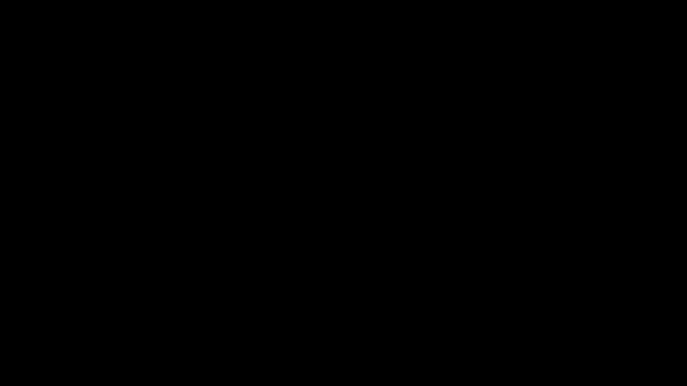
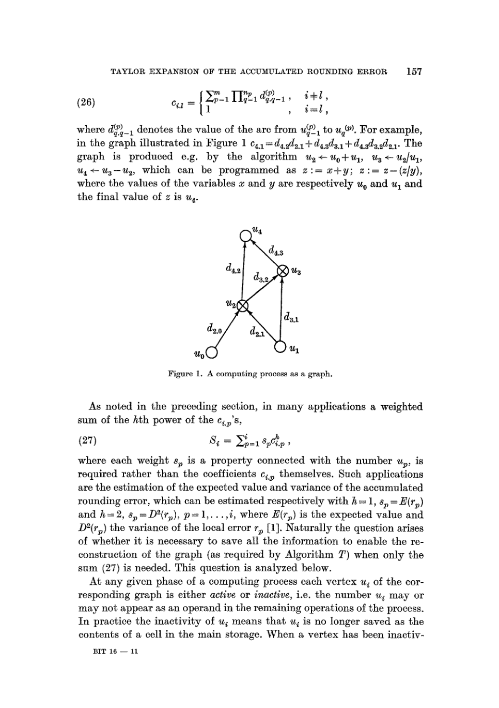
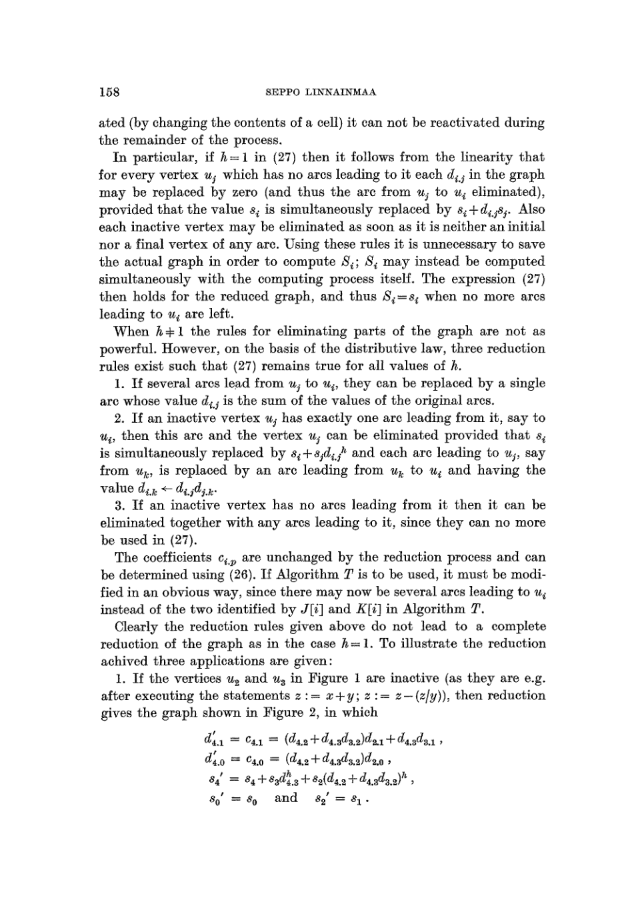

Taylor expansion of the accumulated rounding error

| Architecture Type | Algorithmic Differentiation / Numerical Analysis |
|---|---|
| Key Innovation | Reverse-mode accumulation of partial derivatives in computational graphs. |
| Performance Metric | Computational cost of gradients proportional to the cost of the function itself. |
| Computational Efficiency | O(1) pass for all partial derivatives relative to the function evaluation pass. |
| Venue | N/A |
| Year | 1976 |
| Citations | 300 |
| DOI | Link |
Seppo Linnainmaa's 1970 Master's thesis and subsequent 1976 paper, 'Taylor expansion of the accumulated rounding error,' introduced what is now known as reverse-mode automatic differentiation (AD). While originally developed to estimate the rounding errors of numerical algorithms, Linnainmaa's method provided the first general and efficient algorithm for computing the partial derivatives of a composite function. This mathematical breakthrough is the direct algorithmic ancestor of the gradient that is needed in the calculation of the weights to be used in the network.">backpropagation algorithm used to train modern neural networks.
Rounding Error and Taylor Expansion
Linnainmaa's primary goal was to solve a problem in numerical stability: how to quantify the cumulative effect of rounding errors in a long sequence of floating-point operations. He proposed using a first-order Taylor expansion to linearize the error propagation.
By treating each elementary operation in a program as a node in a computational graph, he realized that the total error could be expressed as a weighted sum of the individual errors introduced at each step. The weights in this sum are the partial derivatives of the final output with respect to the intermediate values.
Discovery of Reverse-Mode AD
To compute these weights efficiently, Linnainmaa described an algorithm that traverses the computational graph in reverse order (from output to inputs). This 'reverse pass' allows for the simultaneous calculation of all partial derivatives with a computational complexity that is a small constant multiple of the original function evaluation.
This was a major improvement over 'forward-mode' differentiation, which requires a separate pass for each input variable. Linnainmaa's method proved that for functions with many inputs and a single output—exactly the case for loss functions in machine learning—gradients could be calculated with incredible efficiency.
The Link to Backpropagation
While Linnainmaa did not explicitly apply his method to neural networks, the algorithm he described is identical to the 'gradient that is needed in the calculation of the weights to be used in the network.">backpropagation' algorithm popularized by Rumelhart, Hinton, and Williams in 1986. Linnainmaa's work provided the pure mathematical and algorithmic framework for what would become the engine of the deep learning revolution.
Historians of AI, such as Jürgen Schmidhuber, have identified Linnainmaa as the originator of the core algorithm, noting that his 1970 thesis was the first to detail the efficient reverse-mode pass for arbitrary differentiable computational graphs.
Historical Context and Legacy
Linnainmaa's work was initially published in Finnish in 1970 and later in English in 1976. Due to its focus on numerical analysis and its initial publication language, it remained relatively unknown to the early neural network community.
Today, Linnainmaa is recognized as a pioneer of automatic differentiation. His algorithm is implemented in every major deep learning framework, including TensorFlow and PyTorch, which use reverse-mode AD to compute the gradients necessary for training massive models with billions of parameters.
Concept Breakdown
A set of techniques to numerically evaluate the derivative of a function specified by a computer program.
An AD method that computes derivatives by working backward from the output, especially efficient for functions with many parameters.
A directed graph where nodes represent mathematical operations and edges represent the flow of data.
The derivative of a multivariate function with respect to one variable while holding others constant.
The difference between the result produced by a given algorithm using exact arithmetic and the result produced by the same algorithm using finite-precision floating-point arithmetic.
Mathematics
Error Propagation Weight
| Symbol | Meaning |
|---|---|
| $f$ | Final output or result of the computation |
| $x_i$ | An intermediate or input variable in the sequence of operations |
The Chain Rule (Reverse)
| Symbol | Meaning |
|---|---|
| $\delta_i$ | The 'adjoint' or gradient of the output with respect to node i |
Figures and Explanations

